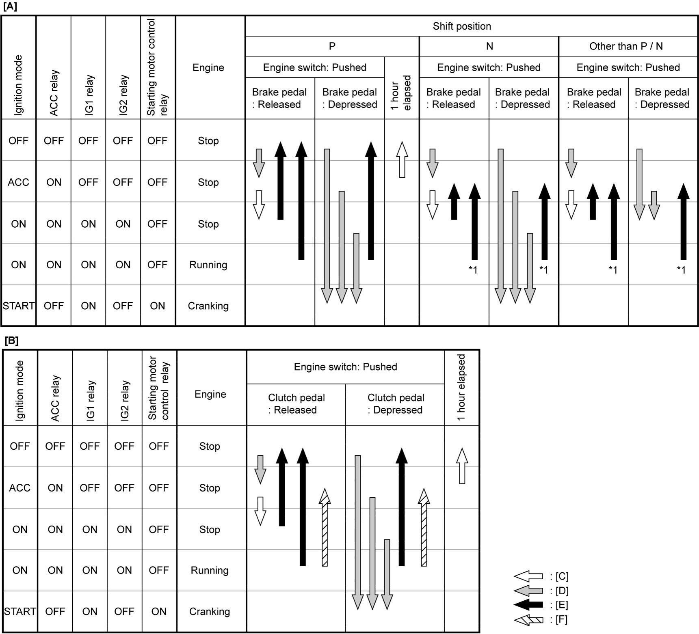
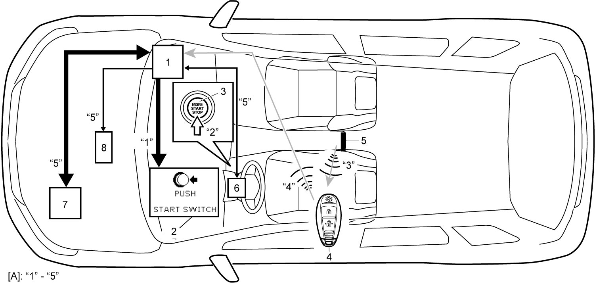
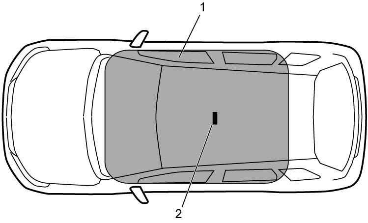

10E
| Description of Keyless Engine Start Function |
Changing Ignition Mode
•When engine switch is pushed with remote controller inside cabin and clutch pedal (M/T model) or brake pedal (A/T model / twin clutch system model) released, keyless start control module compares the ID code sent by remote controller with the ID code registered in keyless start control module. When these ID codes match, keyless start control module controls ON/OFF of the ACC, IG1, and IG2 relays according to engine switch operation for switching ignition mode from “OFF” → “ACC” → “ON” (engine not running) → “OFF”. When ignition mode is “ACC”, “IGNITION SWITCH POSITION ACC” is shown on the information display. When mode is “ON” (engine not running), “IGNITION SWITCH POSITION ON” is shown on the information display.
•For A/T model and twin clutch system model, keyless start control module judges whether select lever is in “P” position or not by the state of P position switch. This inhibits ignition mode switching from “ACC” to “OFF” with select lever in any position other than “P” position.
•Table below shows transition of ignition mode according to engine switch operation. One arrow indicates transition by pressing engine switch once.
•For A/T model and twin clutch system model, keyless start control module judges whether select lever is in “P” position or not by the state of P position switch. This inhibits ignition mode switching from “ACC” to “OFF” with select lever in any position other than “P” position.
•Table below shows transition of ignition mode according to engine switch operation. One arrow indicates transition by pressing engine switch once.
NOTE:
Except in emergency situations, do not stop engine while driving.

 "Expand image")
| [A]: | A/T model / twin clutch system model | [D]: | Shift only when the ID code sent from the remote controller matches | *1: | While driving, shift when holding the engine switch down longer |
| [B]: | M/T model | [E]: | Shift only while the vehicle is stopped | ||
| [C]: | Always shift | [F]: | While driving (shift when holding the engine switch down longer) |
Starting Engine
The method of starting engine is as follows.
1)When clutch pedal is depressed (M/T model) or when brake pedal is depressed with shift position in P or N (A/T model / twin clutch system model), keyless start control module (1) sends request signal to combination meter (2) through CAN communication to display “PUSH START SWITCH” on the information display.
2)Push engine switch (3) with remote controller (4) being carried.
3)Keyless start control module activates mid inside antenna (5) to send request signal to remote controller.
4)Remote controller receives request signal and then sends ID code to keyless start control module.
5)Keyless start control module compares ID code sent from remote controller with ID code registered in keyless start control module. If ID codes match, keyless start control module outputs a steering lock release request signal to steering lock unit (6). At the same time, it outputs engine start signal to ECM (7) and turns the starting motor control relay ON to activate the starting motor (8). This enables the steering lock to be released and the engine to be started.


 "Expand image")
| [A]: | Signal flow “1” – “5” linked with Step 1) – 5) |
Operation area
Engine can be started when remote controller is within mid inside antenna detection area (1).
NOTE:
Keyless engine start function may not operate when remote controller is on instrument panel, in one of the storage boxes, around foot area of driver side or passenger side, in door pocket, or in luggage compartment etc.

 "Expand image")
| 2. | Mid inside antenna |
Engine Cannot Be Started
•When remote controller is not in vehicle compartment or there is only an unregistered one in vehicle compartment, keyless start control module sends immobilizer indicator light request signal, information display request signal, and warning buzzer request signal to combination meter through CAN communication to warn driver. At the same time, it turns ACC, IG1, IG2 and starting motor control relays OFF to inhibit ignition mode from switching and the starting motor from activating.
•If remote controller battery has run down or system malfunction has occurred, engine can be started by placing remote controller on the engine switch as an emergency measure.
•If remote controller battery has run down or system malfunction has occurred, engine can be started by placing remote controller on the engine switch as an emergency measure.